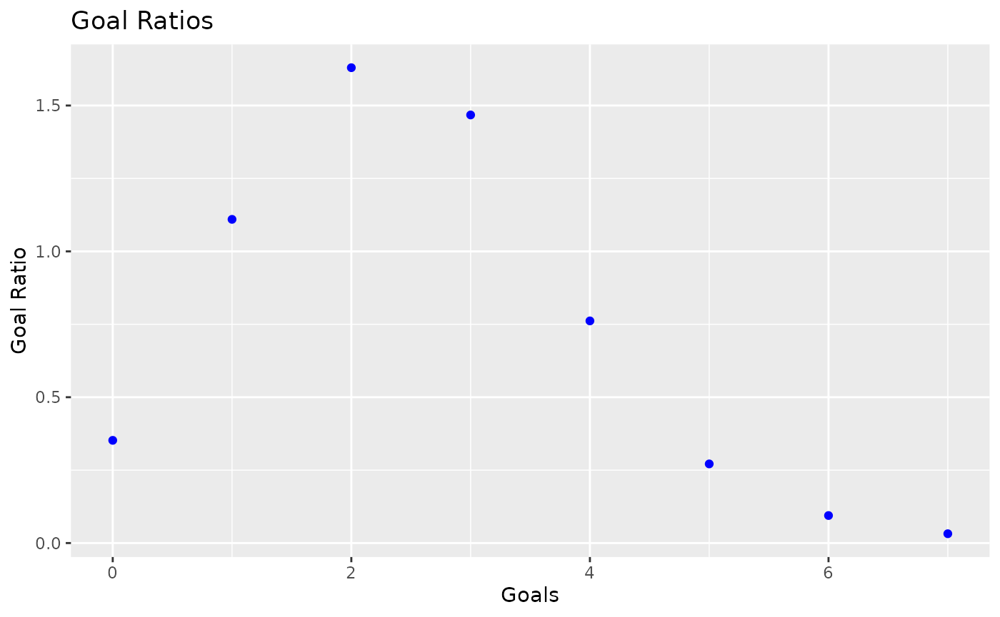
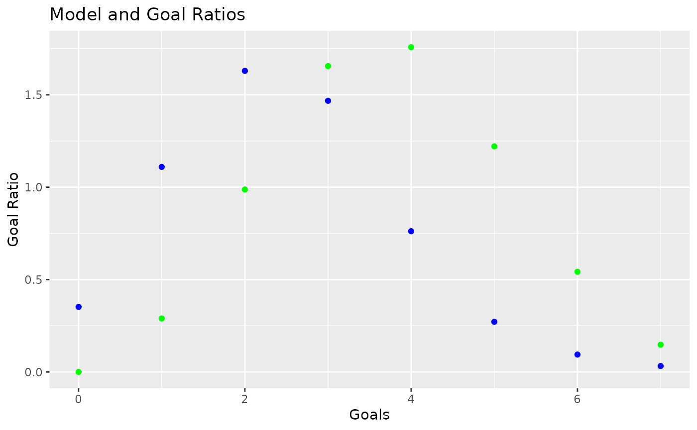

The code has gone through a lot of changes for the 2021-2022 season. This article highlights those changes.
The most significant part of the improvements for 2021 are enhancements to the model itself. A known issue was the under-performance of the model in predicting tie games. Looking at the prevalence of goals for tie games it was quickly apparent that the model under-predicted 2-2 and 3-3 ties significantly. While normally the model performs well in predictions of 2 or 3 goals for a team, the teams are motivated to play to a draw and take the game to overtime, as it guarantees them at least one point. By adding two factors (named theta and gamma), the chances of having a ‘regular time’ tie game are adjusted to match the actual.
Let’s demonstrate. I’ll select for games that are only included in the most recent model parameters. Then for all games that were ties (i.e. went to OT or SO for resolution) pulling the goals at which they were tied at the end of regulation time.
scores<-scores %>%
dplyr::filter(.data$GameID %in% unique(m$data$GameID)) %>%
dplyr::mutate('Goals' = dplyr::case_when(.data$Result == 0.25 ~ .data$HomeGoals,
.data$Result == 0.4 ~ .data$HomeGoals,
.data$Result == 0.5 ~ .data$HomeGoals,
.data$Result == 0.6 ~ .data$AwayGoals,
.data$Result == 0.75 ~ .data$AwayGoals,
TRUE ~ NA_integer_))From then, we can calculate the ratio of goals in regular games compared to goals in tied games. The *2 adjusts because each tie game has two teams at that goal count.
goalratios<-sapply(0:max(scores$Goals, na.rm = TRUE),
FUN = function(x) (nrow(scores[scores$Goals == x & !is.na(scores$Goals),])/nrow(scores[!is.na(scores$Goals),]))/
(nrow(scores[(scores$HomeGoals == x | scores$AwayGoals == x) & is.na(scores$Goals),])/nrow(scores[is.na(scores$Goals),])) ) * 2If we plot the goal ratios vs. score (in blue) we can see that they’re the same shape as a Weibull curve!
goalratios<-data.frame("Goals" = 0:max(scores$Goals, na.rm=T), "GoalRatio" = goalratios)
ggplot(data = goalratios) +
geom_point(aes_string(x="Goals", y="GoalRatio"), colour="Blue") +
labs(x="Goals", y="Goal Ratio", title="Goal Ratios")
The new eta,beta and k factors produce a similarly shaped curve by developing a Weibull curve with shape and sacale values (distribution) equal to eta and beta respectively, and then multiplied the distribution by k to match the goal ratios. Plotted here (in red) you can see they match fairly well.
#goalratios$DistP<-dpois(goalratios$Goals, lambda=HockeyModel::theta) * HockeyModel::gamma
goalratios$DistW<-dweibull(goalratios$Goals, shape=beta, scale = eta) * k
ggplot(data = goalratios) +
geom_point(aes_string(x="Goals", y="GoalRatio"), colour="Blue") +
geom_point(aes_string(x="Goals", y="DistW"), colour = "Green") +
labs(x="Goals", y="Goal Ratio", title="Model and Goal Ratios")
This could likely be better, but for now it’s better than before. The past predicted tie rate was about 17%. With this change, it’s up to 19%, but draws occur in about 23.5% of games.
The model originally used a scraper that I had written for Hockey-Reference.com. While this worked well, changes in their website had, periodically, put the data unavailable until fixes were installed. The NHL has an API for accessing data directly from them, but until now I haven’t put that to use.
A package called nhlapi (available on CRAN and GitHub) has helped with this extensively. Unlike some other api access packages, this one is very lightweight. The code includes a complete adoption of this package and the removal of HockeyScrapR as a dependency. HockeyScrapR will be retired.
This also provides some of the previously manual data, such as series limiting errors and having to scramble to get predictions up before games start.
We also now use conference and division assignments from the NHL instead of manually setting that up each year. Removal of hard coded data allows more time for improvements as less time is spent on updating these items.
The way that playoff and Stanley Cup chances used to be calculated was based on the playoff format that the past few years had used. But both 2019-2020 and 2020-2021 used different formats (re-seeding, divisions/conferences, etc.). So the code now uses a slower, but more accurate and much more flexible. The new method is a Monte Carlo simulation, it simulates the playoffs millions of times to estimate the odds of each result.
Daily processing code records the predicted odds to a file (located at ./data-raw/dailyodds.csv). This will help with calculating in-season metrics (log loss/accuracy), and in reading past day’s predictions. A helper function was also added that will clean up the file if there’s any duplicates (e.g. if a game gets postponed after the predictions are posted)